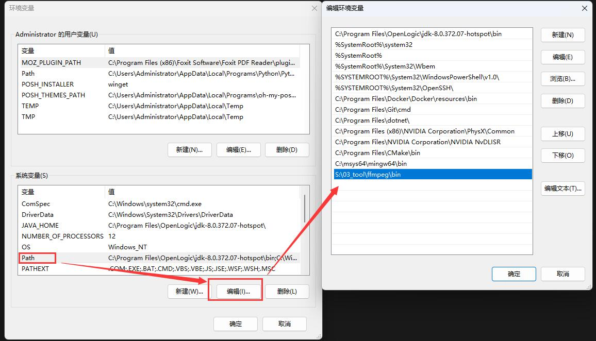

0x00 导航
鉴于 AI 绘画的知识点较多，限于篇幅及便于分类组织，我会以一个系列文章的形式记录：
- 系列 01：《AI 绘画原理与工具》
- 系列 02：《AI 绘画模型扫盲》
- 系列 03：《AI 绘画模型推荐》
- 系列 04：《文生图：不会念咒的炼丹师不是一个好画家》
- 系列 05：《图生图：突破次元圈限制》
- 系列 06：《高清修复：轻松拥有 24K 钛合金画质》
- 系列 07：《提示词进阶：渐变|交替|混合》
- 系列 08：《LoRA 专题：五大应用场景》
- 系列 09：《LoRA 训练：不会炼丹的魔法师不是一个好画家》
- 系列 10：《ControlNet: 姿态控制》
- 系列 11：《ControlNet 进阶：打造炫酷的艺术字和二维码》
- 系列 12：《AI 动画初探：整个宇宙为你而闪烁》
你当前正在阅读的是系列 12：《AI 动画初探：整个宇宙为你而闪烁》
0x10 前言
前些日子优酷主办了一个活动《优酷宠爱剧场：用 AIGC 做了 1 万份爱意》，其中的宣传片《让生活更有 AI 意》在电影镜头中融入了 SD 风格过渡转绘、其效果不可谓不震撼。
稍微分析下宣传视频中的效果实现原理：
- 片头文字成像： 利用 ControlNet 可以实现，现在相关插件已经比较成熟了，不在本篇的讨论范围，可以参考系列《ControlNet 进阶：打造炫酷的艺术字和二维码》
- 真实视频、二次元化： 使用了画面风格转绘，如果单帧图像来看就是用二次元模型重绘了一遍，在系列的《图生图》中就已经有过相关的阐述，但是要在视频中实现这个效果还是有相当难度的。目前在视频中可以可以实现这个效果的 SD 插件有 EbSynth、Mov2Mov、TemporalKit 等等。
- 场景渐变、分镜过渡： 猜测使用了 Deforum、AnimateDiff 或 Runway-Gen2 的效果，它们都可以基于一帧的画面、以渐变的方式生成后续动画。但是一些长镜头应该还包含后期的商业效果在里面，毕竟现阶段的 SD 很难做出这么流畅的效果，因为扩散的过程不可控。
为了验证猜想，我找了两个影视素材片段：
利用 EbSynth + Deforum 复现出了类似的效果：
时间关系，demo 做出来的分镜过渡比较粗糙，但是耐心花时间去调试更多关键帧的 prompt 的话，完全可以做得更好。
简单调试 10 秒的视频花了 1 天的时间，有更好的显卡支持的话可以适当提升效率
0x20 插件介绍
0x21 EbSynth
EbSynth 最早被用于对一些视频做风格化的绘画滤镜处理，最近得以 AI 绘画的兴起、其潜力被重新发掘了出来，最常见的用法就是把真人视频次元化。它的原理是通过智能识别并提取视频里一些比较特殊的帧（关键帧），优先对它们进行风格化重绘，然后再在这些关键帧之间生成过渡帧来填充画面（这个其实和 Flash 动画的原理很相似）。
相比有着类似功能但却是一帧帧重绘的 Mov2Mov 而言，EbSynth 产出的效率更快，而且画面连续稳定的效果会更好、“闪帧” 的情况要比 Mov2Mov 改善了不少。
“闪帧” 是什么？
人眼因为有视觉暂留的特点，一般我们看视频觉得一个动作很丝滑，是因为这个动作在至少连续 24 帧的画面都只变化了一点点。但是如果帧与帧之间的画面变化幅度太大，人眼就会看到 A 动作瞬间从一个位置跳跃到另一个位置，这时就会看到残影。
画面残影过多就会形成闪烁，也就是所谓的 “闪帧” —— 连续两帧之间差异过于明显了。
而 AI 绘画的本质就是扩散，即使固定随机种子，相邻两帧的画面也不可能做到完全一致，所以类似 Mov2Mov 这种重绘所有帧的插件，“闪帧” 问题是难以避免的。
而 EbSynth 之所以能改善这种问题，是因为用了蒙版遮罩主体以外大部分的要素，使得除了主体之外都不 “闪” 了，弱化了 “闪帧” 的问题。但是仔细看优酷的宣传片也不难发现，它里面的人物主体也存在 “闪帧” 的现象，只是画面过渡效果太多太快，轻易感觉不到。
0x22 Deforum
Deforum 是一款号称 “瞬息全宇宙” 的 SD 插件，只需要提供一帧的图像，它就可以基于设计多帧的文字提示、结合概率去噪扩散算法、随机生成各种风格的连续图像序列。
如果说 EbSynth 的是基于图生图使得画面在可控的范围内转绘，那么 Deforum 就是基于文生图更富创造性的联想生成画面。
在成品出来之前，你完全不会知道 Deforum 会画什么，你唯一能做的就是提前告诉它你希望在画面存在哪些要素、以及你的机位要如何变化而已。Deforum 牺牲了可控性、但是把 AI 本身的创造性发挥得淋漓尽致。
0x30 插件安装
在开始处理视频之前，首先要为 SD 增设相关的插件：
| 安装插件 | 插件依赖 | 模型依赖 |
|---|---|---|
| EbSynth | FFmpeg | - |
| EbSynth | - | |
| Ebsynth Utility | - | |
| transparent-background | ckpt_base.pth | |
| Deforum | sd-webui-deforum | AdaBins_nyu.pt |
| dpt_large-midas-2f21e586.pt |
0x31 EbSynth 安装
1. 安装 FFmpeg
FFmpeg 是一款轻量级的视频编解码工具，可以在官网找到 ffmpeg-git-full.7z：
下载后解压到电脑任意位置，例如 S:\03_tool\ffmpeg，然后把其中的 bin 目录加到系统环境变量就可以了：

在 PowerShell 的命令行中执行 ffmpeg -version 能正常打印信息则安装成功：
2. 安装 EbSynth
到官网下载（需要填写邮箱）、并解压到任意位置备用就可以了：
3. 安装 Ebsynth Utility
Ebsynth Utility 是 Ebsynth 配套的 SD 插件。
运行 SD 后，在 Extensions -> Install from URL -> URL for extension’s git repository 中填入插件的源码地址：
- 官方地址： https://github.com/s9roll7/ebsynth_utility
- 国内镜像： https://gitcode.net/ranting8323/ebsynth_utility
然后点击 Install 按钮就可以了：
安装完成后需要再点击 Settings -> Reload UI 重启 WebUI，就可以看到新增的 Ebsynth Utility 插件了，插件内置了 8 步使用教程，下面再逐步展开：
4. 安装 transparent-background
这个是自动生成蒙版用的，也是 EbSynth 画面不 “闪帧” 的最大依仗。
需要在 PowerShell 的命令行中用 python 安装： python -m pip install transparent-background
但是这里需要注意，如果你用的是 秋葉aaaki 的 NovelAI，因为它内置了一个 Python，所以必须要用内置的 Python 安装才有效果。
例如我的 NovelAI 安装目录为 R:\AIDraw\novelai-webui-aki-v3，那么需要在 PowerShell 中依次执行：
cd R:\AIDraw\novelai-webui-aki-v3
.\py310\python.exe -m pip install transparent-background随后，生成蒙版还需要一个 ckpt_base.pth 模型，在 Ebsynth 的 github issue 中有提供下载路径。
下载后更名为 ckpt_base.pth，然后再放到当前用户目录 %USERPROFILE%/.transparent-background 下即可：
如果
.transparent-background目录不存在，需要手动创建
0x32 Deforum 安装
Deforum 是 SD 插件。
运行 SD 后，在 Extensions -> Install from URL -> URL for extension’s git repository 中填入插件的源码地址：
- NovelAI 专用版： https://github.com/deforum-art/sd-webui-deforum
- 非 NovelAI 版本： https://github.com/deforum-art/deforum-stable-diffusion
然后点击 Install 按钮就可以了，安装完成需要重启 NovelAI（不仅仅是重启 WebUI）。
安装完成后，根据官方的说明，还需要下载两个模型 AdaBins_nyu.pt 和 dpt_large-midas-2f21e586.pt 到 %{NovelAI}/models/Deforum/ 目录下，否则 Deforum 是无法进行扩散渲染的。
0x40 准备
0x41 材料准备
首先准备需要转绘的视频素材，由于只是演示，我这里准备了若干个几秒的影视经典镜头：
尽量不要贪多，后期混剪会把时长放大，再者我这些视频因为是高清的缘故，每秒的帧数达到 60 帧，6 秒钟就需要处理 360 张图片，而且分辨率达到了 1920x1080，制作起来非常耗时、且对显卡压力非常大。未有经验的同学建议用低分辨率低帧数先练练手。
其次需要根据希望视频转绘的风格去选择模型，关于模型的介绍在系列的《AI 绘画模型推荐》已经详细介绍过了，这里我希望转绘成二次元风格的、而且对场景细节有一定的要求，故而选取了在细节描绘上有独特张力的二次元模型大颗寿司（Dark Sushi）
0x42 步骤大纲
要达到《优酷宠爱剧场》的效果，我揣摩步骤大概如下：
- 使用 EbSynth 转绘各个分镜片段为二次元风格，同时为了达到渐变效果，先用蒙版先转绘主体、再去掉蒙版转绘全画
- 使用 Deforum 做分镜之间的过渡帧联想，而拼接两个分镜的方法是：
- 前一个分镜的最后一帧，按时间线向后联想画外场景
- 后一个分镜倒播，倒播的最后一帧，按时间线向后联想画外场景
- 两个分镜联想的最终画面的 prompt 尽量相同，使得画面相似（主要是色调和元素布局）
- 后一个分镜的联想片段再一次倒播
- 两个分镜就能比较自然地拼接起来，拼接位置如果稍微不自然，可以在后期剪辑雾化
重复这上述步骤处理完所有独立的分镜片段，然后通过剪映等视频编辑工具串把每个场景串联起来。
之所以后一个分镜要倒播，是因为 Deforum 只能顺着时间线往后联想
下面开始实操演练一下。
0x50 EbSynth 风格转绘
首先需要建立一个 EbSynth 项目：在原视频的同目录下创建一个同名空目录即可。
这里以 O:\Desktop\Demo\xj.mp4 为例，建立一个空文件夹 O:\Desktop\Demo\xj，这个就是 EbSynth 的项目根目录。
EbSynth 的项目根目录不能有任何中文和空格，否则会报错。它用于存放转绘过程中生成的文件。
然后打开 SD WebUI，切换到 Ebsynth Utility 插件，开始转绘视频：
- 在 project settings 里面填写 EbSynth 项目路径、同时导入原视频
- 切换到 configuration，这里可以控制 EbSynth 每一步的参数（左侧是每个 stage 的参数设置，右侧则是执行每个 stage）
0x51 把视频切成单帧
首先点击左侧的 stage 1:
- Frame Width 和 Frame Height 是转绘的宽高，一般保持和原视频一致，默认 -1 就可以了
- Mask Threshold 设置透明蒙版阈值，建议选择 0.05，一般不超过 0.1
- 点击右侧的 stage 1，然后拉到最下面点击 Generate 生成，然后等待即可
- 此时会对视频进行拆帧（存储到
video_frame），同时自动识别并生成每一帧的主体部分生成对应的 Mask 蒙版（存储到video_mask）
这个过程比较漫长，视显卡性能、原画分辨率和原片时长，可能需要等待几十分钟以上
Mask Threshold 不是必须的，但它是 EbSynth 解决 “闪帧” 问题的核心方案。
EbSynth 通过 Mask 蒙版把画面中的人物、主体等单独提取出来、使用图生图重绘，蒙版之外的背景则保持不变。
在大多数情况下，画面闪烁的原因都是由于画面中和人物无关的部分一直在变化，人眼因为有视觉暂留的特点，导致这种情况被放大。其实只要背景不变、或者变化幅度相对缓慢，整个画面看上去就会舒服很多。
如果发现 video_mask 蒙版文件里面和主体无关的杂质过多，可以调低 Mask Threshold 的阈值，然后重新生成。甚至可以直接用 PS 修改蒙版。
Mask Threshold 依赖前面安装的 transparent-background，如果没安装成功，
video_mask里面不会有任何内容，因为没有蒙版，重绘的就是全图了
0x52 提取关键帧
关键帧是视频剪辑中常见的概念，之前接触过 Falsh 绘制的同学应该对其不陌生。
一般而言，在画面中发生明显转场的地方都需要关键帧作为区分标志，而关键帧和关键帧之间的过渡帧，则可以根据画面变化的趋势方向自动填补生成。
而 EbSynth 也是利用这个原理、优先重绘关键帧、然后生成过渡帧，在快速重绘视频的同时保持连贯性。
首先点击左侧的 stage 2:
- Minimum keyframe gap： 最小关键帧间隔
- Maximum keyframe gap： 最大关键帧间隔
- Threshold of delta frame edge： 帧边缘检测阈值，用于自动筛选关键帧，使得帧间隔在最小值和最大值之间徘徊（关键帧之间的间距可以不一样）。阈值越小则关键帧间隔越窄，如果为 0 则取最小间隔。如果前面生成了蒙版，还会自动根据蒙版的变化幅度筛选关键帧。
- 一般保持默认即可，点击右侧的 stage 2，然后拉到最下面点击 Generate 生成
如果视频的动态成分、镜头切换较多，应该减少这些值以抓取更多的关键帧；但如果最终视频效果混乱、闪帧严重，就应该增大这些值、减少关键帧的抓取以保持画面稳定
在 video_key 里面可以看到被选取的关键帧和它们对应的编号，如果你对自动选出的帧不满意：
- 增加关键帧，可以到
video_frame复制你想要的帧过来 - 减少关键帧，直接在
video_key删除对应的帧即可
一个建议是，确保每一个分镜的开头和结尾都有关键帧，以确保每个分镜的连贯性。
0x53 重绘关键帧
此时会发现左侧是没有 stage 3 的:
- 先点击右侧的 stage 3，然后拉到最下面点击 Generate 生成
- 上面会出现提示信息，需要到图生图中批量重绘关键帧
这里不着急批量重绘，可以先抽取一个关键帧进行调试。
首先我们可以在 video_key 任意找一个关键帧，通过 Tagger 反推 Prompt :
把 Prompt 复制到图生图之后，就可以开始调试效果了（关于图生图的方法在系列的前面已经介绍过了，这里不再赘述）。
调试的过程与 EbSynth 无关，但是有一些注意的地方：
- 大模型必须选择转绘视频的模型调试，如这里前面选择的是二次元模型大颗寿司（Dark Sushi）
- 提示词无需太精确，因为调试完之后需要批处理重绘，提示词会应用到所有帧，如果太具体反而效果不好。建议是加一些控制画质的
best_quality, masterpiece:1.2, hires, original、或者不变的人物特征、固定的背景特征等。 - 可以加 LoRA 和 ControlNet 对人物进行控制，对应的方法在系列的前面也介绍过了，但是会占用额外的显存
- 重绘幅度一般不要超过 0.5，否则对比原视频的画面变化太大，就会很突兀
- Resize by 选择 1，像素需要和原画保持一致
然后反复重绘、直到生成自己满意的图片，然后就可以固定随机种子，进行下一步了：
- 若前面调试时把修改过【生成批次】或【每批数量】，此时必须都重新改为 1
- 固定随机种子为调试最满意的图片种子
- 在【脚本】中选择 ebsynth utility
- 在 Project directory 指定当前的 Ebsynth 项目根目录，如这里为
O:\Desktop\Demo\xj，用于批量重绘关键帧 - 重绘幅度一般不要超过 0.5
- Mask Mode 选择 Normal， Inpaint Area 选择 Only masked，表示只重绘蒙版区域（人物）
- 设置 ControlNet 权重，为了画面不混乱，这里建议 ControlNet 必须开启，但是需要在设置中允许 ControlNet 被其他脚本调用： Settings
->ControlNet->Allow other script to control this extension - 其他设置参数保持默认即可
关于 Mask 蒙版，个人经验建议是先用蒙版重绘一次；出成品后，回来这里再取消蒙版、全图重绘一次。此时就可以得到两个加工视频：一个是只有人物转绘，一个是全部转绘。这样做的好处是，在后期加工原视频时，可以起到逐步过渡的效果：人物先发生变化、再到整个画面发生变化，层次分明、总体感官会舒服很多。
关键帧批量转绘后，会输出到 img2img_key 目录，可以去预览一下效果：
如果对某一关键帧的重绘效果不满意，可以单独重绘这一帧，然后同名覆盖到
img2img_key目录下就可以了。关键帧的质量直接影响过渡帧生成的质量，所以这步很重要。理论上每个关键帧加入 ControlNet 做边缘控制，可以进一步抑制闪帧的问题（避免在同样的蒙版下画出肥瘦不一的人物）。
0x54 放大关键帧
回到 Ebsynth Utility，注意到左侧只有 stage 3.5，没有 stage 4 5 6。
其实 stage 3.5 是针对画面颜色的校正，防止 SD 过度扩散导致影响原视频的质感。
理论上可以拖一张标准图片到这里让它自动校色，但是我觉得没什么变化，就先跳过了。
直接点击右侧的 stage 4，提示我们利用后期放大功能让关键帧更清晰：
具体步骤如下：
- 附加功能选项卡中的批量处理过程中，设置使用原始名称作为输出文件名： 勾选 Settings
->Saving images/grids->Use original name for output filename during batch process in extras tab
- 在 Extra 中对目录下的图片进行批量放大，其中输入/输出目录在 stage 4 的提示信息中可以找到：
- Input directory：
O:\Desktop\Demo\xj\img2img_key - Output directory：
O:\Desktop\Demo\xj\img2img_upscale_key
- Input directory：
- 等比缩放 Scale by 此处设置为 1，即保持和原视频大小一样
- 因为是二次元，放大算法选择
R-ESRGAN 4x+ Anime6B（关于放大算法，在系列的《高清修复》中已有详细说明） - 点击 Generate 生成，就可以在
img2img_upscale_key找到所有被放大的关键帧：

0x55 生成 ebs 文件
到这一步为止我们已经准备好 Ebsynth 需要的全部材料了，此时我们回到 Ebsynth Utility 。
直接点击右侧的 stage 5，再点击 Generate 生成，就会在 Ebsynth 项目的根目录下生成 ebs 文件：
0x56 生成过渡帧
打开 Ebsynth 项目的根目录，可以看到 1 个以上的 ebs 文件（数量根据关键帧的多寡而定）。
依次用我们前面下载的 Ebsynth 程序打开它们：
点击 Run All 按钮，即可自动生成过渡帧。
ebs 文件需要按时间顺序逐个打开，一个运行完之后再打开第二个运行，否则有几率出现问题
0x57 合成视频
当 Ebsynth 显示所有过渡帧的状态都变成 Synth 后，说明全部过渡帧已经生成完毕。
此时回到 Ebsynth Utility，点击左侧的 stage 7：
- 选择导出视频的格式，默认是 mp4
- 点击右侧的 stage 7，再点击 Generate 生成，就会自动合成视频了
在项目根目录下可以找到生成的两个视频，带 _with_snd 后缀的是合成了原视频的声音，不带的则是无声版：
看看 Ebsynth 转绘这个分镜的效果：
整体感觉是不理想的，尤其全图转绘 “闪帧” 现象比较明显（虽然相比 Mov2Mov 已经改善了不少），不过这也是目前 AI 动画的硬伤，而且由于是基于技术原理的问题，目前没法在用户侧解决。
但是我们只需要其中某一两秒的效果，所以后期截取一下还能接受，先留着备用。
利用同样的操作，可以得到另一个分镜的转绘效果：
部分帧画得不好，不过后期那部分会渐变为真人，所以无所谓了。
0x58 替换背景（可选）
理论上 stage 7 就是最后一步了，stage 8 是用来换背景的，适合那些机位固定的视频。
我这里没有准备素材，这步就不演示了。
0x60 Deforum 联想场景
得到转绘的视频后，分别取两个分镜最后一帧的画面、作为初始画面，放到 Deforum 中联想后续的场景。
如果对最后一帧不满意，可以取中间某个关键帧当作最后一帧，后期把后面的画面全部剪掉就可以了。我这里取的是中间的关键帧。
Deforum 的配置参数超级繁琐，需要有心理准备。
0x61 设置运行参数
在 SD 切换到 Deforum，点击【Run 运行】标签 ：
- 首先大模型选择和 Ebsynth 一样的大颗寿司（Dark Sushi），同时选择推荐的采样器
- 设置生成帧的宽高，和初始画面保持一致即可
- 随机种子不建议固定，否则画面基本不会变化
- 其他参数按需即可，文生图/图生图都有类似参数，可以保持默认不变
0x62 设置生成关键帧的参数
所谓的关键帧就是指角色或者物体运动变化中关键动作所处的那一帧。
在 Deforum 中，涉及到控制关键帧配置的语法都是一样的，有两种格式：
- 插值：
0:(x), 12:(y), ...，其中0:和12:分别表示帧数，可以任意指定；x和y表示内插变量值（例如像素、CFG、重绘幅度等） - 函数表达式：
0:(1.02+0.02*sin(2*3.14*t/20)), 12:(0.5+0.02*sin(2*3.14*t/20)), ...
把需要控制的多个关键帧全部列出来就可以了，需要注意序列的末尾不能是 , 。关键帧之间的过渡，Deforum 会自动根据设定的路径补帧。
如果不需要控制关键帧，设置为 0:(0) 就可以了。而且在设置关键帧相关的配置时，所有的帧数都必须从 0 帧开始，否则渲染会报错。
知道配置语法后，现在点击【Keyframes 关键帧】标签 ：
- Animation mode 动画模式推荐选择 3D
- Border mode 边缘像素生成模式：
- warp: 从图像的相对边缘提取像素进行扭曲变形（推荐）
- replicate: 复制图像边缘像素
- Max frames 生成动画的帧数，默认 120 帧 = 6 秒（20 帧/秒）
- Strength 强度，即控制下一帧受上一帧影响的程度，现在保持默认即可
- Motion 相机的运动方式（可以把你的眼睛当作为相机），这里也是 Deforum 最核心的功能：
- Translation X：水平运动方式，括号内为在 X 轴移动的像素，负数画面向左移动，正数向右移动
- Translation Y：垂直运动方式，括号内为在 Y 轴移动的像素，负数画面向下移动，正数向上移动
- Translation Z：深度运动方式，括号内为在 Z 轴移动的像素，负数画面向外移动，正数向内移动
- Rotation 3D X: 三维角度旋转，括号内为围绕 X 轴旋转的角度，负数画面向下旋转，正数向上旋转
- Rotation 3D Y: 三维角度旋转，括号内为围绕 Y 轴旋转的角度，负数画面向左旋转，正数向右旋转
- Rotation 3D Z: 三维角度旋转，括号内为围绕 Z 轴旋转的角度，负数画面逆时针旋转，正数顺时针旋转
Motion 的配置只能自己慢慢调试，多测试几遍就对移动方向有感觉了，一般常用的就是 Translation X/Y。而且由于坐标轴是以相机为参考系，所以画面的动态是反向的。
这里需要注意的是，不要把相机太快的移出原画面，因为 Deforum 生成下一帧的像素、是依赖上一帧的，如果快速移走相机，就会因为像素不够而变成雪花。在 Deforum 的演示动画中，基本都是从中心缓慢移动镜头的，目的就是确保有足够丰富的像素生成下一帧画面。
- Noise 噪点，控制每帧的噪点变化。噪点会影响像素的变化，噪点值越小，画面越稳定；噪点值越大，画面多样性越大。
这里的 Noise schedule 有个万能公式是 0:(-0.06*(cos(3.141*t/15)**100)+0.06)，具体什么意思有待探讨。
- Coherence 颜色一致性，一般保持默认的 LAB 即可：
- HSV: 平衡鲜艳颜色的算法，但可能产生不切实际的结果
- LAB: 更线性的算法，可以模仿人类对颜色空间的感知
- RGB: 有利于在红、绿、蓝通道中强制执行无偏的颜色量。如果采样过低，一些图像可能会产生彩色伪影
- Amount schedule 模糊数值，一般尽可能小一点。需要根据生成动画的镜头速度而定，镜头速度块，模糊值设置大一些，画面衔接会比较舒服。
- FOV，相机运动速度。它根据 Translation Z 的值调整画面在三维中移动的比例，范围在
-180 ~ +180。接近 180 使得画面的深度更小、相机运动越慢；而接近 0 时将允许更大的深度、相机运动越快。
其实这部分核心就是配置相机的运动方式，其他参数在不熟悉之前都保持默认即可
0x63 设置生成关键帧的 prompt
点击【Prompts 提示词】标签，这一步是用 JSON 格式配置你期望的关键帧画面的提示词，格式为（最后一行末尾不能有 ,）：
{
"关键帧数": "prompt, prompt, prompt ...",
"关键帧数": "prompt, prompt, prompt ...",
...
"关键帧数": "prompt, prompt, prompt ..."
}关键帧数和前面配置的 Motion 的关键帧数没有对应关系，第一帧必须是 0 ，把初始画面反推的提示词写上去。最后一帧是前面设置的 Max frames，用最终期望画面倒推的 prompt，可以起到一定的引导作用。
中间帧的 prompt 可以一步步从第 0 帧的逼近到 Max frames，建议设计好过渡场景的描述，交给 ChatGPT 生成就好。
而反向提示词会自动应用到每一帧，无需在 JSON 里面指定。
提示词配置完之后，Deforum 大部分的参数都已经配置完了，这时记得存储一下配置，避免辛苦配置的一堆参数丢了。以后用 Deforum 时就可以基于这次的配置去修改、无需重新配置了。更多 Deforum 的配置技巧可以参考 这里。
0x64 设置初始画面
点击【Init 初始】标签：
- 在 Image Init 下勾选 use Init，然后把前面选为初始画面的关键帧导入进来
- 点击 Generate 就可以开始生成后续画面了，过程比较漫长，可以切换到控制台查看进度
- 完成之后可以直接在页面上预览成品：
0x70 后期合成
把 EbSynth 和 Deforum 生成的动画，根据之前规划的编排、在后期剪辑合成：
一些过渡不自然的地方，可以采取雾化、加速等处理，让视觉看上去更流畅舒服，最终就得到成品：
备用视频源
0xF0 后记
- 制作动画时，做好每一帧的编排计划很重要，磨刀不误砍柴工
- 最耗时是 EbSynth 生成蒙版、还有 Deforum 的 prompt 调试
- EbSynth 在多人情况下，原画分辨率是个问题，分辨率不够脸会糊，太高则显存占用大、而且极其耗时
- Ebsynth 每一步的目录和每一个文件都可以随便改，执行相关按钮动作时，只需要这些目录和文件存在就可以，所以过程中有很多操作空间
- Deforum 长镜头调试的耗时太长，很难做，只要色彩和元素位置差不多，可以直接切换画面过渡，优酷宣传片里面好几个分镜都是直接切换的
- AnimateDiff-cli-prompt-travel 比 Deforum 更稳定、而且能够指定关键帧的图片，但可惜不是 SD 插件、而且只能用命令行生成
- Runway-Gen2 在广告领域比 Deforum 更出彩
- 使用 SD 制作这类动画时，时间投入相比传统工艺并不会省事多少，效果甚至更差，只能说在后期的帮助下勉强做了一个成品出来。目前 SD 研究重点都是训练 AI 识别单张图片而非动画规律，这导致 AI 在自由创作领域表现良好、但是完成既定目标的效果一般。虽然时常说要保持 AI 的创造性，但是实际应用中根本不需要 AI 有很多创造性，甚至宽泛点说，AI 的自由度应该是超越人类思维的自由，只要让 AI 创作人类可以接受的东西，都属于剥夺了 AI 自由创作的权利，只能说 AI 在动画领域仅仅是「未来可期」